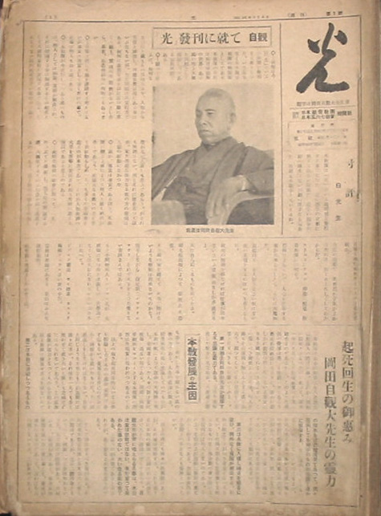
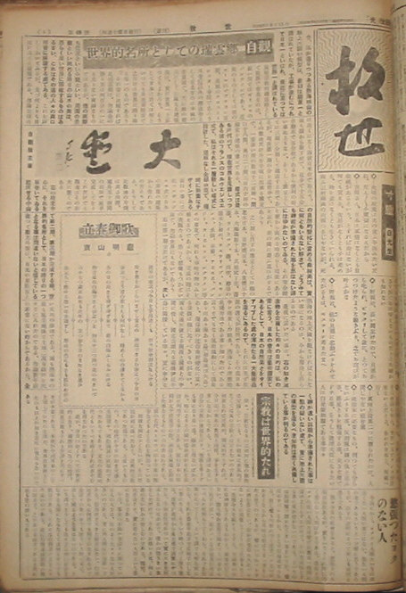
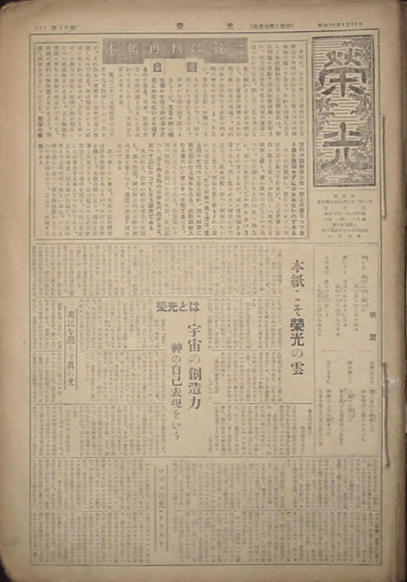

 |
『光』 1号～47号
昭和24年3月8日から
昭和25年1月28日まで
Ａ版
編集兼発行人
印刷人
印刷所
発行所 |
創刊の辞
吾らは今回『光』という小新聞を発刊する事となった。いうまでもなく日本観音教団の機関紙としてである。本教団の目的は病貧争絶無の世界であるところの地上天国を目標として活動しつつある宗教団体である。
飜（ひるがえ）って思うに、いかなる宗教といえどもその目標たるや、人類から苦悩を滅消し、理想世界実現にある事はいうまでもないが、ただ問題はその実行力である、いかに善美な事を口に言い筆に書くといえども、実現の可能性がないとしたら、畢竟（ひっきょう）、空念仏以外の何物でもあるまい。
吾らは決して他を誹謗（ひぼう）する考えはないが事実は事実として書くだけの事で、この事は何人も知るところである。
本教団が今実行しつつあるところのものは、個人としては病難、貧困が解決され、それに付随する争は解消する。その結果として天国的家庭が実現する事である、そんなうまい話がこの世智辛い世の中にあるはずがないと誰しも思うであろう。がそれも無理はない、何となれば歴史はじまって以来、いまだかような強力なる救いの力の発現は、人類の経験になかった。
ところが、事実は事実である以上、本教団に触るる事によって何人といえども納得がゆくであろう、この偉大なる救いの力を普（あまね）く世に知らしめ一人でも多くの幸福者を造るのが本意であり、それが人類救済の大業を吾らに委任され給うた神に応えるゆえんであると思うのである。
この暗黒無明の社会に対（むか）って「光」のつぶてを発射し、たちまち暗の解消するところ、天国化するという信念をもって邁進するのみである、以上発刊の辞かくのごとし。（自観）
|
 |
『救世』 48号～65号
昭和25年2月4日から
昭和25年6月3日まで
|
「光」改題「救世」に就いて
別項のごとく、従来の日本観音教団及び日本五六七教会が解散、新しく世界救世（メシヤ）教が創立されたので、『光』新聞も改名して『救世』となったのである。
|
 |
『栄光』 66号～
昭和25年8月23日～
|
本紙再刊に就て
本紙は、去る六月三日発行の六十五号までで休刊の止むなきに至ったのは御承知の通りである、それと同時に五月八日本紙編輯（へんしゅう）主任井上茂登吉氏は、脱税問題の容疑で静岡県検察庁へ収容され、次で同月二十九日私も同様の運命に遭ったのである、しかしながら私も井上も法に触れるような事は全然なく、全く当局の調査不充分のためであった事はもちろんで、いずれは吾々の公明なる真相の判る時の来るのは言うまでもない、昔から宗教に法難はつきものとは言いながら、時々こういう事があるのは、吾々が不徳の致すところでもあろうが、また吾々の心魂を磨かせ給う神の深き恩恵に外ならないとも信ずるのである、由来、使命の大きい者程苦難も大きいと言われているにみても、また何をか言わんやである。
私は二十二日間収容の上六月十九日出所したのであるが、それから一週間目に朝鮮問題が勃発したのである、今は朝鮮という一区域に限られてはいるが、どちらも米ソの二大勢力の冷たい戦争が熱の戦争になった前奏曲といえよう、これも無論世界的大浄化の最初の表われであって、最後の審判の予告篇ともいえよう、かような状勢を見るにつけても、吾らの救世的活動舞台は刻一刻と近寄りつつある事を意識せずにはおれないのである。
今日の新聞紙に、彼のインボデン少佐の事が載っているが、これは非常に面白い観方と思う、少佐いわく「いかなる国家といえども、善か悪かのどちらかであって、中立国というものはあり得ない、従ってこの際どちらか決めるべきだ」との言であるが、まことに痛快極まる言である、しかし私はひとり国家のみではなく、社会全般にわたって何事にもいえると思う、もちろん宗教といえどもそれに漏れるはずはない、ただ宗教の異（ちが）うところは、善と想って行っている事が、往々結果において悪になる場合もある。この点宗教人たる者大いに戒心すべき点であろう、また法においてもそうである、ちょうど私が今回の容疑で取調べを受けた際、私は思った。善を作るための法律も行過ぎると、反って悪になってしまう事実である。
また本紙も、従来の『救世』を『栄光』と改題し、益々精進、神の御目的たる救世済民の実を挙ぐべく、邁進の決意を固めたのである。
ここで申したい事は、大抵の信徒諸君は最早御存知であろうが、今回の事件を機とし、本教全般に亘り、機構を改革した事である、まず私は今まで救世教教主としての地位を退き、今後は布教にのみ専念する事となったのである、これも御神意に因る事はもちろんで、人間の考えでは到底判り得ない事は、いつも時の進むに従って深き御経論からであった事を悟るので、これは常に経験するところである。（自観）
|